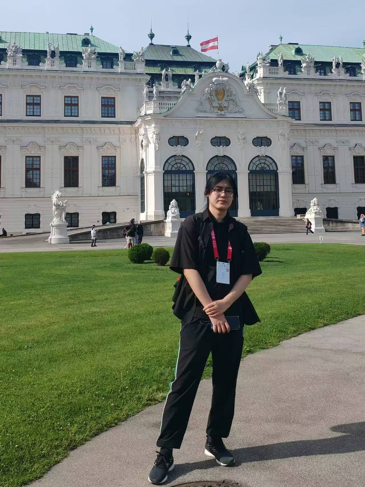
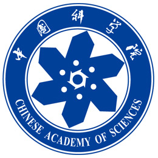
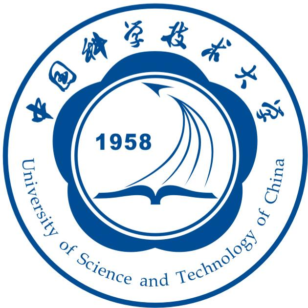
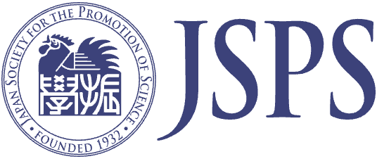

My research interests include Gaussian Splatting, Visual SLAM, and 3D Reconstruction. My research goal is to recover 3D scenes from 2D images📸 and make the robot understand the information better🤖.
🤝 Feel free to reach out if you are interested in collaborating on my research!
🔎 I am looking for a possible visit opportunity for about half a year (fully funded by JSPS).